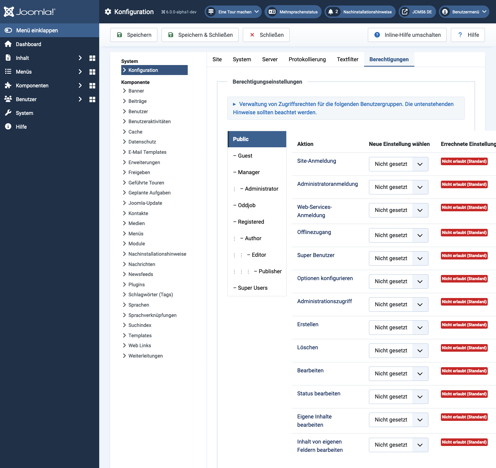
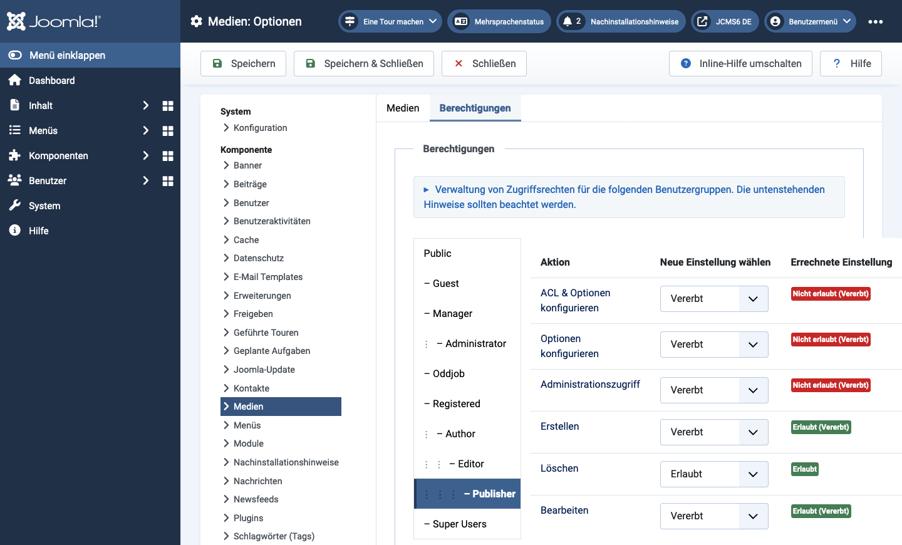
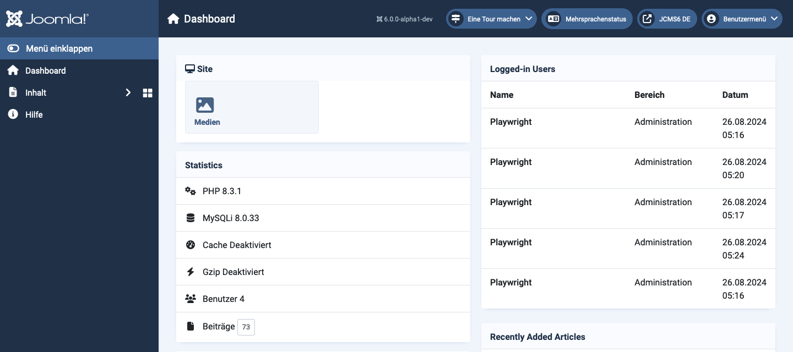
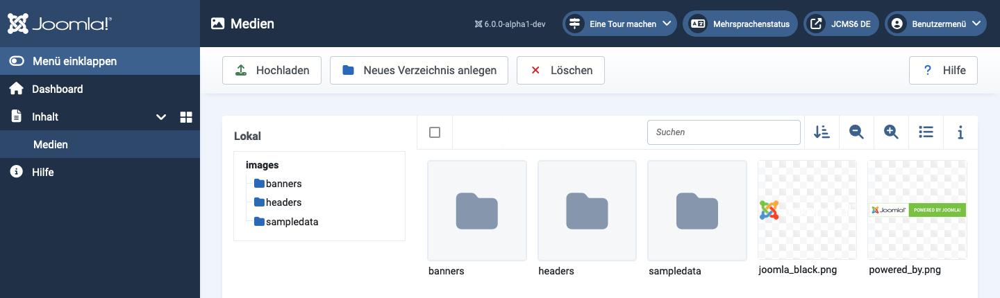

Viele Erweiterungen verfügen über Bearbeitungsbildschirme mit einer Registerkarte Berechtigungen, auf der die den Benutzergruppen zugewiesenen Berechtigungen geändert werden. Die Anzahl der Benutzergruppen kann variieren, da benutzerdefinierte Benutzergruppen für spezielle Zwecke hinzugefügt werden können. Die Anzahl der Aktionen, die geändert werden können, variiert auch je nach Erweiterung. Dieser Artikel enthält eine kurze Beschreibung der Berechtigungsbildschirme für solche speziellen Zwecke.
Stellen Sie sich vor, es gibt einen Benutzer, der sich um Medien (Bilder und Dateien) kümmert, aber keine anderen Verantwortlichkeiten hat. Eine Gruppe mit dem Namen Oddjob wurde erstellt und der speziellen Zugriffsebene zugewiesen. Ein Benutzer mit dem Namen Oddjob wurde erstellt und der Oddjob-Gruppe zugewiesen.
Für detailliertere Informationen zu Benutzergruppen, Zugriffsebenen und Berechtigungen gibt es ein separates Tutorial zu Zugriffskontrolle.
In diesem Beispiel wurde Benutzern in der Oddjob-Gruppe die globale Berechtigung zum Anmelden an der Administratoroberfläche zugewiesen, aber sonst nichts.

Um auf eine bestimmte Komponente zuzugreifen, müssen Berechtigungen in den Komponentenoptionen festgelegt werden. In diesem Beispiel die Optionen der Medienkomponente.

Sie werden feststellen, dass für diese Komponente weniger Aktionen verfügbar sind und die Oddjob-Gruppe gerade genug Berechtigungen hat, um den Job auszuführen.
So ändern Sie die Berechtigungen für diese Komponente:
Nach der Anmeldung sieht ein Benutzer in der Oddjob-Gruppe, welche Home-Dashboard-Module Spezielle Zugriffseinstellungen haben, und einen Menüpunkt-Link zur Medienkomponente.

Und der Medienbildschirm für Benutzer Oddjob ist wie erwartet:
